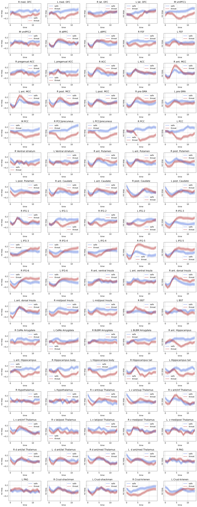

May 30, 2022: Data samples and model
Contents
May 30, 2022: Data samples and model¶
get data samples from MAX dataset. A sample is a 14TRs time series for a trial: threat/safe.
import os
import sys
from os.path import join as pjoin
import numpy as np
import pandas as pd
import scipy as sp
import torch
import torch.nn as nn
print(torch.cuda.is_available())
import pickle, time, random
# import neural_structured_learning as nsl
from tqdm import tqdm
import json
from itertools import combinations, product
from operator import add
import copy
from glob import glob
# explanation tools
import captum
# plotting
import matplotlib as mpl
import matplotlib.colors as mcolors
import matplotlib.pyplot as plt
plt.rcParamsDefault['font.family'] = "sans-serif"
plt.rcParamsDefault['font.sans-serif'] = "Arial"
plt.rcParams['font.size'] = 14
plt.rcParams["errorbar.capsize"] = 0.5
# nilearn
from nilearn import image
from nilearn import masking
from nilearn import plotting
# main dirs
proj_dir = pjoin(os.environ['HOME'], 'explainable-ai')
results_dir = f"{proj_dir}/results"
month_dir = f"{proj_dir}/nb/jun22"
# folders
sys.path.insert(0, proj_dir)
import helpers.dataset_utils as dataset_utils
import helpers.base_model as base_model
import helpers.model_definitions as model_definitions
True
2022-05-30 21:42:25.014528: I tensorflow/stream_executor/platform/default/dso_loader.cc:53] Successfully opened dynamic library libcudart.so.11.0
device = "cuda:1" if torch.cuda.is_available() else "cpu"
print(f"Using {device} device")
Using cuda:1 device
dataset¶
def get_data(data_df, subj_idx_list):
normalize = lambda z: (z - np.mean(z)) / np.std(z)
X, y = [], []
for idx_row in tqdm(subj_idx_list):
subj, ts, targets = data_df.iloc[idx_row]
for label in args.LABELS:
contig_regions = dataset_utils.contiguous_regions(targets == label)
for region in contig_regions:
X.append(ts[region[0]: region[1], :])
y.append(targets[region[0]: region[1]])
X = np.stack(X, axis=0)
y = np.stack(y, axis=0)
for idx_roi in np.arange(X.shape[-1]):
X[:, :, idx_roi] = normalize(np.squeeze(X[:, :, idx_roi]))
return torch.FloatTensor(X).to(device=device), torch.LongTensor(y).to(device=device)
'''
dataframe
'''
max_data_path = f"{proj_dir}/data/max/data_df.pkl"
with open(max_data_path, 'rb') as f:
max_data_df = pickle.load(f)
'''
(hyper)-parameters
'''
class ARGS(): pass
args = ARGS()
args.SEED = 74
args.LABELS = [0, 1]
args.names = ['safe', 'threat']
args.MASK = -100
# data
args.num_subjects = len(max_data_df)
args.num_train = round(0.45 * args.num_subjects)
args.num_valid = round(0.05 * args.num_subjects)
args.num_test = args.num_subjects - args.num_train - args.num_valid
'''
generate dataset for the model
'''
subject_idx_list = np.arange(args.num_subjects)
random.Random(args.SEED).shuffle(subject_idx_list)
train_idx_list = subject_idx_list[:args.num_train]
valid_idx_list = subject_idx_list[args.num_train : args.num_train + args.num_valid]
test_idx_list = subject_idx_list[args.num_train + args.num_valid:]
(X_train, y_train) = get_data(max_data_df, train_idx_list)
(X_valid, y_valid) = get_data(max_data_df, valid_idx_list)
(X_test, y_test) = get_data(max_data_df, test_idx_list)
100%|██████████| 49/49 [00:00<00:00, 7487.10it/s]
100%|██████████| 5/5 [00:00<00:00, 3931.67it/s]
100%|██████████| 55/55 [00:00<00:00, 8624.13it/s]
X_train
tensor([[[-0.0484, 0.5275, -0.5891, ..., -0.2659, -0.0327, 1.2791],
[-0.2253, -0.4642, 0.0321, ..., -0.4956, 0.6634, 1.9311],
[ 0.1443, -0.1914, -0.6162, ..., -0.6210, 0.3081, 1.2051],
...,
[-0.3392, -0.6506, -0.0509, ..., -0.3292, 0.5674, 0.7333],
[-0.4234, -0.3609, 0.2153, ..., -0.2341, -0.8304, 1.3439],
[-0.9450, -0.1496, -0.8153, ..., -1.1410, -0.5607, 0.5981]],
[[-1.2979, -0.2315, 0.1597, ..., -0.0980, -0.8998, -0.1339],
[-0.9739, -1.3084, 0.0663, ..., 0.3004, -0.1766, 0.3491],
[-1.3530, -0.2887, 0.2444, ..., -1.2934, -0.1441, 0.5140],
...,
[-0.0970, -0.3476, 0.5593, ..., 0.8312, -0.4973, -1.8229],
[-0.0304, -0.1628, -0.4100, ..., 0.7446, -0.2809, -0.2466],
[-0.4416, -0.1329, 0.1187, ..., -0.3279, -0.9632, 0.1089]],
[[ 1.1500, -1.8785, 0.0026, ..., -0.6297, 0.0200, 0.0667],
[-0.4561, 0.1188, 1.2992, ..., 0.1607, 0.2036, 0.2425],
[ 0.0882, -0.2833, 0.2502, ..., -0.2643, 1.4347, 1.2398],
...,
[ 0.5910, 1.3828, -0.1702, ..., 0.9708, 0.3651, 0.6164],
[ 1.4113, 1.6535, -0.2517, ..., 1.2866, 0.3282, 0.9588],
[ 0.7574, 0.9511, -1.9005, ..., 0.9903, 0.9744, -0.1887]],
...,
[[ 0.3516, -0.0135, 0.7728, ..., 0.0480, 0.9524, 0.4963],
[ 0.2316, 0.2602, -0.4217, ..., 0.2351, 0.4218, 0.5062],
[-0.4671, 0.6303, 0.0639, ..., 1.3743, 0.2358, 0.7782],
...,
[ 0.1236, 0.7035, 0.3220, ..., 0.4478, 1.7336, 2.0951],
[ 0.4573, 0.7418, -0.2384, ..., 0.8493, 1.6262, 0.9558],
[-0.1457, 0.3588, 0.2249, ..., 0.1483, 0.4597, 1.2008]],
[[ 0.5620, 0.9242, -0.6820, ..., 0.1620, 0.8035, 1.0740],
[-0.2344, 0.2909, 0.0746, ..., -0.1798, 0.6363, 0.2716],
[ 0.5377, 0.6575, 0.5587, ..., -0.0067, 0.7092, 0.6775],
...,
[-1.7251, -0.8445, -0.4857, ..., 0.4753, 0.2777, 0.3136],
[-0.1471, 0.0929, 0.7314, ..., 0.6123, 0.5994, 0.1390],
[-0.2051, -0.9712, 1.1592, ..., 0.0680, 0.4803, 0.5240]],
[[ 0.3922, -0.4633, 0.6908, ..., 0.4060, 0.4818, 0.7882],
[-0.1104, 0.1690, 0.0171, ..., 0.5956, 1.1391, 0.2323],
[ 0.9329, 1.2926, -0.6419, ..., 0.7246, 0.3227, 0.3799],
...,
[-1.0360, -1.1810, -0.3748, ..., -0.3271, 0.0552, -0.0727],
[-0.7229, -1.2057, 0.7140, ..., 0.4176, 0.8026, 0.3152],
[-1.5019, -0.4302, 0.6047, ..., -0.3116, 0.2383, 0.3454]]],
device='cuda:1')
X, y = X_train.cpu().numpy(), y_train.cpu().numpy()
X_conds = {}
for label in args.LABELS:
idx = y[:, 0] == label
X_conds[f"{label}_m"] = np.mean(X[idx, :], axis=0)
X_conds[f"{label}_s"] = 1.96 * np.std(X[idx, :], axis=0) / np.sqrt(idx.shape[0])
roi_name_file = (
f"{os.environ['HOME']}/parcellations/MAX_85_ROI_masks/ROI_names.txt"
)
roi_names = pd.read_csv(roi_name_file, names=['roi_name']).values.squeeze()
time = np.arange(X.shape[1])
names = ['safe', 'threat']
colors = {0:'royalblue', 1:'firebrick'}
nrows, ncols = 17, 5
fig, axs = plt.subplots(
nrows=nrows,
ncols=ncols,
figsize=(5*ncols, 4*nrows),
sharex=False,
sharey=True,
dpi=150
)
plt.subplots_adjust(
left=None, bottom=None,
right=None, top=None,
wspace=None, hspace=0.5
)
for idx_roi, roi_name in enumerate(roi_names):
ax = axs[idx_roi//ncols, np.mod(idx_roi,ncols)]
ax.set_title(f"{roi_name}")
for label in args.LABELS:
ts_mean = X_conds[f"{label}_m"][:, idx_roi]
ts_std = X_conds[f"{label}_s"][:, idx_roi]
ax.plot(ts_mean, color=colors[label], label=names[label])
ax.fill_between(
time,
(ts_mean - ts_std),
(ts_mean + ts_std),
alpha=0.3, color=colors[label],
)
ax.set_xlabel(f"time")
ax.set_ylabel(f"roi resp.")
ax.grid(True)
ax.legend()

I compared the time series of each roi with the responses shown in the MAX paradigm paper: Murty et al. - 2022 - Distributed and Multifaceted Effects of Threat and Safety. They are comparable justifying the correctness of this extracted time series for further analysis.
model¶
# model args
args.num_units = 32
args.num_classes = 2 # for binary classification
args.l2 = 1e-2
args.dropout = 0.5
args.learning_rate = 4e-4
args.num_epochs = 50
args.validation_split = 0.2
args.batch_size = 64
args.return_sequences = True
args.input_size = X_train.shape[-1]
class GRU_classifier(nn.Module):
def __init__(self, args):
super(GRU_classifier, self).__init__()
self.gru = nn.GRU(
input_size=args.input_size,
hidden_size=args.num_units,
num_layers=1,
batch_first=True,
dropout=args.dropout
)
self.fc = nn.Linear(args.num_units, args.num_classes)
def forward(self, x):
x, _ = self.gru(x)
y = self.fc(x)
return y
def accfn(y_true, y_pred):
labels_pred = torch.argmax(y_pred, axis=-1)
mask = (y_true != args.MASK).bool()
correct = 1-torch.abs(labels_pred[mask] - y_true[mask])
return correct.sum() / len(correct)
def train(model, X, y, opt, lossfn, permutation):
epoch_losses = []
epoch_accs = []
model.train()
for i in range(0, X.size()[0], args.batch_size):
indices = permutation[i:i + args.batch_size]
batch_x, batch_y = X[indices], y[indices]
y_pred = model(batch_x,)
loss = lossfn(
y_pred.view(-1, args.num_classes),
batch_y.view(-1)
)
acc = accfn(batch_y, y_pred)
opt.zero_grad()
loss.backward()
opt.step()
epoch_losses += [loss.item()]
epoch_accs += [acc.item()]
return np.sum(epoch_losses) / len(epoch_losses), np.sum(epoch_accs) / len(epoch_accs)
def evaluate(model, X, y, lossfn, permutation):
epoch_losses = []
epoch_accs = []
model.eval()
with torch.no_grad():
for i in range(0, X.size()[0], args.batch_size):
indices = permutation[i:i + args.batch_size]
batch_x, batch_y = X[indices], y[indices]
y_pred = model(batch_x,)
loss = lossfn(
y_pred.view(-1, args.num_classes),
batch_y.view(-1)
)
acc = accfn(batch_y, y_pred)
epoch_losses += [loss.item()]
epoch_accs += [acc.item()]
return np.sum(epoch_losses) / len(epoch_losses), np.sum(epoch_accs) / len(epoch_accs)
model_file = f"{results_dir}/max/models/GRU_classifier_gruunits_{args.num_units}.pt"
history_file = f"{results_dir}/max/models/GRU_classifier_gruunits_{args.num_units}_history"
model = GRU_classifier(args).to(torch.float32)
lossfn = nn.CrossEntropyLoss(ignore_index=args.MASK, reduction='mean')
optimizer = torch.optim.Adam(model.parameters())
model.to(device)
lossfn.to(device)
if os.path.exists(model_file):
model.load_state_dict(torch.load(model_file))
with open(history_file, 'rb') as f:
history = pickle.load(f)
else:
permut_train = torch.randperm(X_train.size()[0])
permut_valid = torch.randperm(X_valid.size()[0])
best_valid_loss = float('inf')
train_loss, train_acc = np.zeros(args.num_epochs), np.zeros(args.num_epochs)
valid_loss, valid_acc = np.zeros(args.num_epochs), np.zeros(args.num_epochs)
for epoch in range(args.num_epochs):
train_loss[epoch], train_acc[epoch] = train(model, X_train, y_train, optimizer, lossfn, permut_train)
valid_loss[epoch], valid_acc[epoch] = evaluate(model, X_valid, y_valid, lossfn, permut_valid)
if valid_loss[epoch] < best_valid_loss:
best_valid_loss = valid_loss[epoch]
torch.save(model.state_dict(), model_file)
print(f'Epoch: {epoch+1:02}')
print(f'\tTrain Loss: {train_loss[epoch]:.3f} | Train Acc: {train_acc[epoch]*100:.2f}%')
print(f'\t Val. Loss: {valid_loss[epoch]:.3f} | Val. Acc: {valid_acc[epoch]*100:.2f}%')
history = {
'train_loss': train_loss,
'train_acc': train_acc,
'valid_loss': valid_loss,
'valid_acc': valid_acc
}
torch.save(model.state_dict(), model_file)
with open(history_file, 'wb') as f:
pickle.dump(history, f)
/home/govindas/venvs/expln-ai3.9/lib/python3.9/site-packages/torch/nn/modules/rnn.py:62: UserWarning: dropout option adds dropout after all but last recurrent layer, so non-zero dropout expects num_layers greater than 1, but got dropout=0.5 and num_layers=1
warnings.warn("dropout option adds dropout after all but last "
Epoch: 01
Train Loss: 0.690 | Train Acc: 53.92%
Val. Loss: 0.656 | Val. Acc: 61.34%
Epoch: 02
Train Loss: 0.665 | Train Acc: 58.74%
Val. Loss: 0.635 | Val. Acc: 64.10%
Epoch: 03
Train Loss: 0.654 | Train Acc: 60.48%
Val. Loss: 0.623 | Val. Acc: 65.60%
Epoch: 04
Train Loss: 0.645 | Train Acc: 61.82%
Val. Loss: 0.615 | Val. Acc: 67.00%
Epoch: 05
Train Loss: 0.635 | Train Acc: 62.99%
Val. Loss: 0.607 | Val. Acc: 67.30%
Epoch: 06
Train Loss: 0.625 | Train Acc: 64.17%
Val. Loss: 0.600 | Val. Acc: 68.45%
Epoch: 07
Train Loss: 0.613 | Train Acc: 65.23%
Val. Loss: 0.594 | Val. Acc: 68.48%
Epoch: 08
Train Loss: 0.600 | Train Acc: 66.00%
Val. Loss: 0.591 | Val. Acc: 67.83%
Epoch: 09
Train Loss: 0.587 | Train Acc: 67.17%
Val. Loss: 0.589 | Val. Acc: 66.89%
Epoch: 10
Train Loss: 0.574 | Train Acc: 68.61%
Val. Loss: 0.587 | Val. Acc: 67.28%
Epoch: 11
Train Loss: 0.560 | Train Acc: 69.93%
Val. Loss: 0.586 | Val. Acc: 66.96%
Epoch: 12
Train Loss: 0.546 | Train Acc: 71.08%
Val. Loss: 0.586 | Val. Acc: 66.44%
Epoch: 13
Train Loss: 0.530 | Train Acc: 72.11%
Val. Loss: 0.587 | Val. Acc: 66.10%
Epoch: 14
Train Loss: 0.514 | Train Acc: 73.30%
Val. Loss: 0.592 | Val. Acc: 65.18%
Epoch: 15
Train Loss: 0.495 | Train Acc: 74.69%
Val. Loss: 0.601 | Val. Acc: 64.62%
Epoch: 16
Train Loss: 0.473 | Train Acc: 76.41%
Val. Loss: 0.615 | Val. Acc: 63.58%
Epoch: 17
Train Loss: 0.449 | Train Acc: 78.30%
Val. Loss: 0.635 | Val. Acc: 63.61%
Epoch: 18
Train Loss: 0.424 | Train Acc: 79.94%
Val. Loss: 0.662 | Val. Acc: 62.26%
Epoch: 19
Train Loss: 0.397 | Train Acc: 81.62%
Val. Loss: 0.700 | Val. Acc: 60.97%
Epoch: 20
Train Loss: 0.371 | Train Acc: 83.30%
Val. Loss: 0.748 | Val. Acc: 58.48%
Epoch: 21
Train Loss: 0.346 | Train Acc: 84.78%
Val. Loss: 0.806 | Val. Acc: 57.86%
Epoch: 22
Train Loss: 0.322 | Train Acc: 86.05%
Val. Loss: 0.868 | Val. Acc: 57.32%
Epoch: 23
Train Loss: 0.297 | Train Acc: 87.48%
Val. Loss: 0.954 | Val. Acc: 57.16%
Epoch: 24
Train Loss: 0.274 | Train Acc: 88.66%
Val. Loss: 1.038 | Val. Acc: 56.02%
Epoch: 25
Train Loss: 0.251 | Train Acc: 89.81%
Val. Loss: 1.167 | Val. Acc: 55.13%
Epoch: 26
Train Loss: 0.230 | Train Acc: 90.53%
Val. Loss: 1.252 | Val. Acc: 56.10%
Epoch: 27
Train Loss: 0.215 | Train Acc: 91.38%
Val. Loss: 1.348 | Val. Acc: 56.03%
Epoch: 28
Train Loss: 0.230 | Train Acc: 90.57%
Val. Loss: 1.385 | Val. Acc: 56.49%
Epoch: 29
Train Loss: 0.263 | Train Acc: 89.42%
Val. Loss: 1.171 | Val. Acc: 58.02%
Epoch: 30
Train Loss: 0.219 | Train Acc: 91.08%
Val. Loss: 1.221 | Val. Acc: 58.48%
Epoch: 31
Train Loss: 0.208 | Train Acc: 91.55%
Val. Loss: 1.298 | Val. Acc: 57.82%
Epoch: 32
Train Loss: 0.220 | Train Acc: 90.84%
Val. Loss: 1.358 | Val. Acc: 55.34%
Epoch: 33
Train Loss: 0.230 | Train Acc: 90.08%
Val. Loss: 1.388 | Val. Acc: 53.83%
Epoch: 34
Train Loss: 0.197 | Train Acc: 92.25%
Val. Loss: 1.342 | Val. Acc: 58.58%
Epoch: 35
Train Loss: 0.178 | Train Acc: 93.24%
Val. Loss: 1.371 | Val. Acc: 57.97%
Epoch: 36
Train Loss: 0.172 | Train Acc: 93.23%
Val. Loss: 1.457 | Val. Acc: 57.48%
Epoch: 37
Train Loss: 0.158 | Train Acc: 93.78%
Val. Loss: 1.612 | Val. Acc: 54.74%
Epoch: 38
Train Loss: 0.153 | Train Acc: 94.00%
Val. Loss: 1.719 | Val. Acc: 53.97%
Epoch: 39
Train Loss: 0.149 | Train Acc: 94.09%
Val. Loss: 1.802 | Val. Acc: 54.26%
Epoch: 40
Train Loss: 0.149 | Train Acc: 94.07%
Val. Loss: 1.846 | Val. Acc: 54.87%
Epoch: 41
Train Loss: 0.145 | Train Acc: 94.23%
Val. Loss: 1.976 | Val. Acc: 53.47%
Epoch: 42
Train Loss: 0.142 | Train Acc: 94.44%
Val. Loss: 1.935 | Val. Acc: 57.07%
Epoch: 43
Train Loss: 0.144 | Train Acc: 94.28%
Val. Loss: 1.918 | Val. Acc: 56.54%
Epoch: 44
Train Loss: 0.138 | Train Acc: 94.45%
Val. Loss: 2.036 | Val. Acc: 54.03%
Epoch: 45
Train Loss: 0.139 | Train Acc: 94.61%
Val. Loss: 1.946 | Val. Acc: 57.68%
Epoch: 46
Train Loss: 0.137 | Train Acc: 94.39%
Val. Loss: 2.168 | Val. Acc: 51.98%
Epoch: 47
Train Loss: 0.135 | Train Acc: 94.59%
Val. Loss: 2.241 | Val. Acc: 50.54%
Epoch: 48
Train Loss: 0.133 | Train Acc: 94.96%
Val. Loss: 2.146 | Val. Acc: 54.20%
Epoch: 49
Train Loss: 0.131 | Train Acc: 95.05%
Val. Loss: 2.214 | Val. Acc: 52.18%
Epoch: 50
Train Loss: 0.134 | Train Acc: 94.93%
Val. Loss: 2.344 | Val. Acc: 50.07%
fig, axs = plt.subplots(
nrows=2, ncols=1,
figsize=(11,5),
dpi=150
)
ax = axs[0]
ax.plot(history['train_loss'], color='tomato', linestyle='-.', label='training_loss')
ax.plot(history['valid_loss'], color='forestgreen', label='valid_loss')
ax.set_ylabel(f"losses")
ax.set_xlabel(f"epochs")
ax.legend()
ax.grid(True)
ax = axs[1]
ax.plot(history['train_acc'], color='tomato', linestyle='-.', label='training_acc')
ax.plot(history['valid_acc'], color='forestgreen', label='valid_acc')
ax.set_ylabel(f"accuracies")
ax.set_xlabel(f"epochs")
ax.legend()
ax.grid(True)